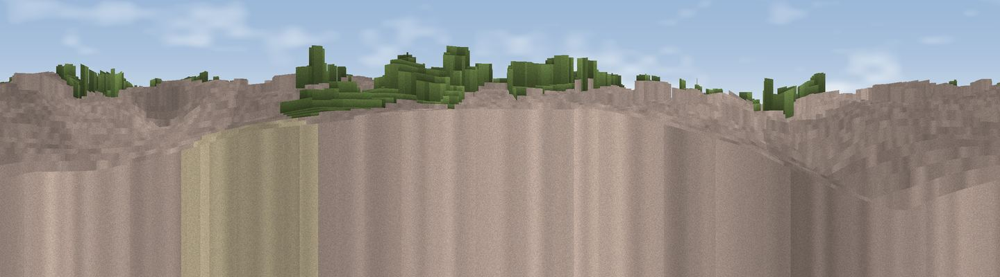

Viewpoint near Manchester
#46368 in England · top 100% of its area beats it · near Manchester · access?Where it is
The exact computed spot (SJ 85213 97575). Click the marker for map links.
Public access: no public right of way or access land is recorded at this exact spot — it may be on private land. Computed from Natural England's CRoW access layer and OpenStreetMap rights of way — not the legal definitive map. Always verify locally.
The view, rendered

A 360° render of this exact spot computed from the terrain model, tree cover and land cover — summer colours, afternoon light, calibrated against photographs of famous viewpoints. Real trees, hedges and buildings will differ in detail.
The panorama
Grey silhouette: terrain skyline in each direction (720 bearings, Earth curvature and refraction included). Dashed green: skyline with trees (+15 m) and buildings (+8 m) as obstacles. Blue strip: how far the ground is visible on each bearing.
Where the view opens
Wedge length = distance to the farthest visible ground on that bearing (vegetation-aware). Rings at 10, 25 and 50 km.
What fills the view
90% built-up · 7% grassland · 4% woodland
Angular shares of the visible panorama (visual magnitude), not map area. Landscape diversity 0.17 (0–1 Shannon).
Key numbers
More beautiful places nearby
The staircase of upgrades: each row has a higher view potential than everything closer. Driving times are estimates from straight-line distance, calibrated against real road routing — check an actual route before setting out.
| Place | Direction | Drive | Score |
|---|---|---|---|
| Viewpoint near Prestwich | NW · 7 km | ~14 min | 31.7 |
| Viewpoint near Simister | NNW · 7 km | ~15 min | 48.3 |
| Viewpoint near Haughton Green | ESE · 11 km | ~21 min | 50.5 |
| Viewpoint near Compstall | ESE · 11 km | ~21 min | 71.7 |
| Holly Bank | ENE · 12 km | ~23 min | 71.8 |
| Harrop Edge | E · 13 km | ~24 min | 74.6 |
| Wild Bank | E · 14 km | ~25 min | 76.2 |
| Viewpoint near Carrbrook | E · 14 km | ~25 min | 77.1 |
53.47469, -2.22425 · source: osm viewpoint · position refined by local search. Computed location — check access rights before visiting.